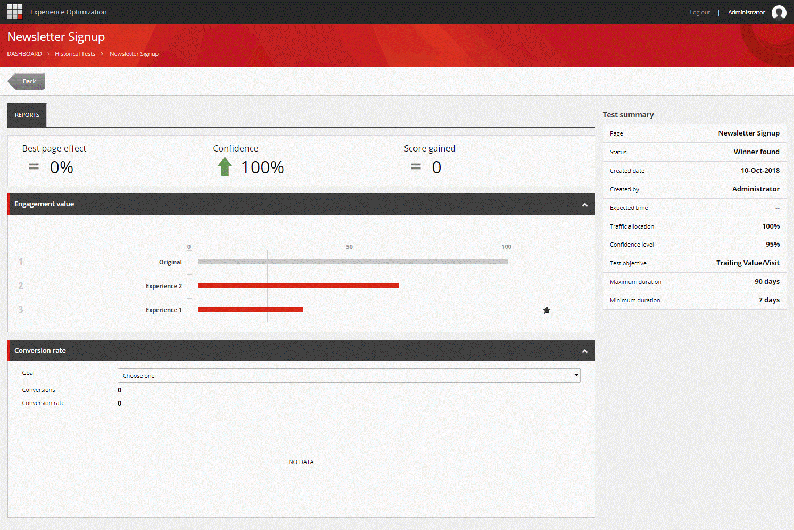
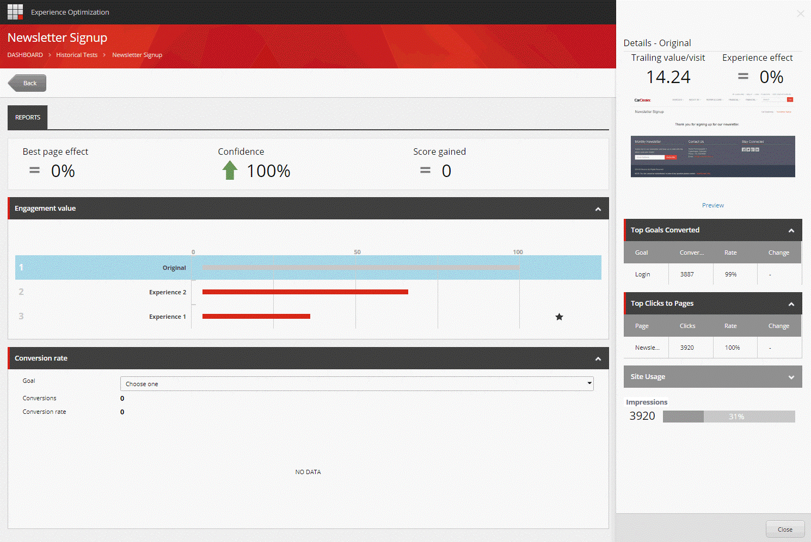

テストリスト¶
テスト リストは、エクスペリエンス エディタとエクスペリエンス最適化アプリケーションの両方で見ることができます。テスト リストを使用して、ドラフト ページ テスト、アクティブなテスト、過去のテスト、提案されたテストを参照したり、ナビゲートしたりできます。
エクスペリエンス エディタの [最適化] タブには、作成したテストが表示されます。
エクスペリエンス最適化アプリケーションへのアクセス権を持つユーザーは、すべてのユーザーが作成したテストのリストを見ることができます。テストのリストは、メニューのリストの部分にあります。
アクティブテスト¶
アクティブなテストリストには、現在進行中のテストが表示されます。各テストには以下の情報があります。
ページ - ページ名です。
経験値 - 経験値の数です。
テストの開始日 - テストが開始された日です。
残り日数 - テストを完了するまでの残り日数。 Sitecoreは、データが統計的に有効であるためにあと何人の訪問者が必要かを計算し、1日あたりの平均訪問者数に基づいて、訪問が発生するまでの日数を推定します。Sitecore は、この推定値を、テスト開始時に指定した最大テスト期間の残り日数と比較します。Days」の左のフィールドには、2つのうち小さい方の日数が表示されます。
作成者 - テストを作成したユーザーの名前です。
効果 - テストの現在の効果です。
ヒストリカルテスト¶
ヒストリカルテストのリストは、終了したテストのリストです。各テストには以下の情報があります。
ページ - ページ名です。
Language - テストが適用されるページの言語バージョン。
Device - テストが適用される Sitecore アダプティブレイアウト。
エクスペリエンス - エクスペリエンスの数。
終了日 - テストが終了した日です。
テスト期間 - テストが実行された日数
作成者 - テストを作成したユーザーの名前です。
テストスコア - テストが達成したスコアです。
効果 - テストの効果です。
リスト内の行をクリックすると、テストの詳細を表示するウィンドウを開くことができます。
{kind=link}
テスト サマリー パネルには、テストがいつ作成されたか、テストの目的は何かなどの情報が含まれています。
[レポート] ウィンドウには、エクスペリエンス エディタの [テスト結果] ダイアログ ボックスに表示される情報と同じ情報が表示されます。表示されるテスト結果データの詳細については、「 コンテンツ テスト結果 」トピックを参照してください。エンゲージメントバリュー] セクションでエクスペリエンスを選択すると、選択したエクスペリエンスの詳細が表示され るペインが表示されます。
{kind=link}
グラフの星はテストの勝者を示しています。
提案されたテスト¶
これは、提案されたテストのリストです。Sitecoreは、ウェブサイト上で実行されているテストと、一般的なウェブサイトの使用状況を継続的に分析し、この分析を使用して、実行すべき新しいテストを提案します。(システム管理者は、どのコンテンツエリアを分析に含めるかを指定することができます)。
注釈
Sitecoreはすべてのスコアを正規化し、0から100の間の結果を与えます。
各テストには以下の情報があります。
Page - Sitecoreがテストを提案しているページ。
ポテンシャル - どのページが、そのページを訪れたユーザーのエンゲージメントを高める可能性が高いかを示しています。 ポテンシャルは、そのページがサイトと比較して蓄積される値として、そのページが閲覧される頻度と相対的に計算されます。以下のように計算されます。 ポテンシャル = (アイテムビュー / サイトビュー) - (アイテム値 / サイト値)
インパクト - テストの予想される影響度。 インパクトは、サイト内のすべてのページと比較して、そのページがどれくらいの頻度で閲覧されているかに基づいて計算されます。次のように計算されます。 インパクト = アイテムビュー / サイトビュー
レコメンデーション - 可能性とインパクトの組み合わせ。これはキースコアであり、Sitecoreがこのページの最適化をどれだけ高く推奨しているかを示しています。 レコメンデーションは以下のように計算されます。 推奨度 = (潜在能力 + インパクト) / 2
ドラフトテスト¶
これは、作成・保存されているがまだ実行されていないページテストのリストです。
各テストには以下の情報があります。
Page - ページの名前です。
経験値 - 経験値の数。
作成者 - テストを作成したユーザーの名前です。
最終保存日 - テストが最後に保存された日付です。
注釈
ドラフトテストリストは、エクスペリエンス最適化アプリケーションでのみ利用可能です。